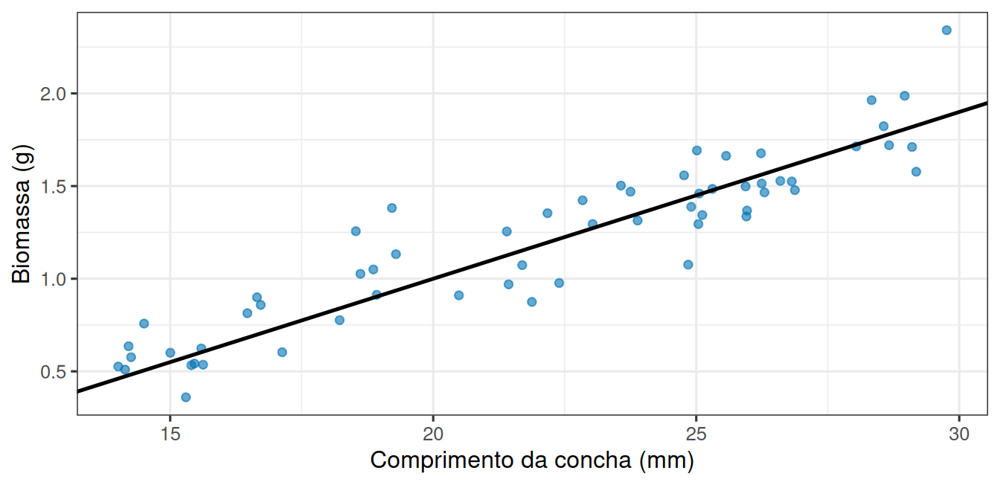
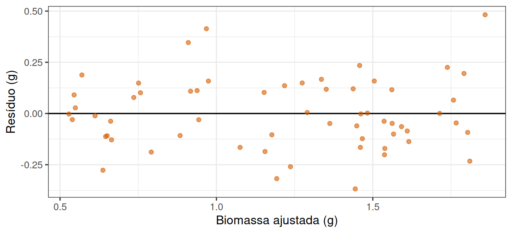
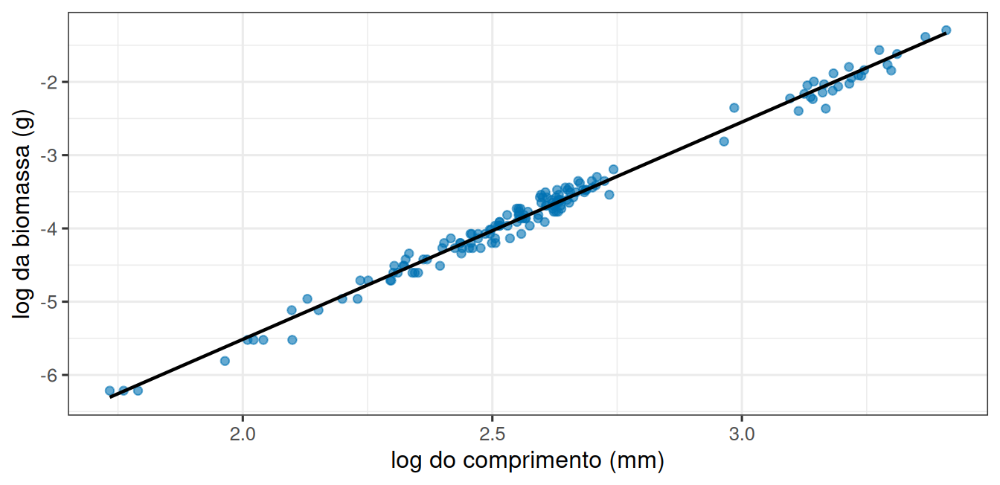

library(tidyverse)
theme_set(theme_bw(base_size = 12))Uma reta para dados costeiros
Prática em R 09
1 Objetivo desta prática
A leitura desta semana apresentou a reta como processo gerador: uma parte sistemática, \(\beta_0 + \beta_1 X\), mais uma variação em torno dela.
Hoje você vai usar esse processo nos dois sentidos. Primeiro no sentido fácil, em que você escolhe \(\beta_0\), \(\beta_1\) e o tamanho da variação, gera os dados e vê o que lm() consegue recuperar, pois sabendo a resposta dá para julgar a estimativa. Depois no sentido difícil, com dados reais de moluscos, em que os parâmetros são desconhecidos e a única forma de julgar o ajuste é olhar os resíduos.
O objetivo em R é ajustar modelos com lm(), ler confint() e escrever um gráfico de diagnóstico sem receber o código pronto.
2 Preparação
Crie um script pr-regressao.R com o cabeçalho de identificação e comece por:
3 Uma reta que você escreve
Vamos inventar uma população de moluscos em que a biomassa cresce linearmente com o comprimento da concha. Os três parâmetros do processo gerador ficam explícitos:
beta0 <- -0.8 # intercepto
beta1 <- 0.09 # quanto a biomassa esperada cresce por milímetro
sigma <- 0.2 # variação em torno da reta
n <- 60
moluscos_sim <- tibble(
comprimento = runif(n, min = 14, max = 30),
biomassa = beta0 + beta1 * comprimento + rnorm(n, mean = 0, sd = sigma)
)runif() sorteia comprimentos espalhados entre 14 e 30 mm, e a segunda linha calcula o centro previsto pela reta e soma a variação individual. O resultado aparece na Figura 1.
ggplot(moluscos_sim, aes(x = comprimento, y = biomassa)) +
geom_point(alpha = 0.6, colour = "#0072B2") +
geom_abline(intercept = beta0, slope = beta1, linewidth = 0.9) +
labs(x = "Comprimento da concha (mm)", y = "Biomassa (g)")
Nenhum ponto cai exatamente sobre a reta, porque ela descreve o centro da resposta, não as observações.
Agora o caminho de volta. lm() estima os coeficientes a partir dos dados, sem saber quais foram os valores usados para gerá-los:
modelo_sim <- lm(biomassa ~ comprimento, data = moluscos_sim)
coef(modelo_sim)(Intercept) comprimento
-0.65574698 0.08449915 confint(modelo_sim) 2.5 % 97.5 %
(Intercept) -0.86458294 -0.44691101
comprimento 0.07525162 0.09374669O gráfico de resíduos é a ferramenta mais barata de toda a modelagem. Como aqui os dados foram gerados por uma reta de verdade, ele mostra o aspecto que um ajuste adequado produz:
diagnostico_sim <- tibble(
ajustado = fitted(modelo_sim),
residuo = residuals(modelo_sim)
)
ggplot(diagnostico_sim, aes(x = ajustado, y = residuo)) +
geom_hline(yintercept = 0, linewidth = 0.6) +
geom_point(alpha = 0.6, colour = "#D55E00") +
labs(x = "Biomassa ajustada (g)", y = "Resíduo (g)")
A Figura 2 traz uma nuvem sem padrão, com espalhamento parecido da esquerda para a direita. Guarde esta imagem, porque é contra ela que você vai comparar o próximo gráfico.
4 Sua vez, parte 1: parâmetro e estimativa
5 Os dados reais: moluscos de abril
url <- "https://raw.githubusercontent.com/FCopf/datasets/refs/heads/main/zuur-2009-data-sets/Clams.txt"
moluscos <- read_tsv(url, show_col_types = FALSE)
abril <- moluscos |> filter(MONTH == 4)
nrow(abril)[1] 154As colunas que interessam são LENGTH (comprimento da concha, em mm) e AFD (biomassa livre de cinzas, em gramas), enquanto MONTH indica o mês de coleta.
Relações entre tamanho e massa em organismos raramente são retas, porque a massa acompanha o volume, que cresce com uma potência do comprimento. Tomar o logaritmo dos dois lados transforma essa relação em uma reta.
abril <- abril |>
mutate(log_comprimento = log(LENGTH), log_biomassa = log(AFD))ggplot(abril, aes(x = log_comprimento, y = log_biomassa)) +
geom_point(alpha = 0.6, colour = "#0072B2") +
geom_smooth(method = "lm", se = FALSE, colour = "black", linewidth = 0.8) +
labs(x = "log do comprimento (mm)", y = "log da biomassa (g)")
modelo_log <- lm(log_biomassa ~ log_comprimento, data = abril)
summary(modelo_log)
Call:
lm(formula = log_biomassa ~ log_comprimento, data = abril)
Residuals:
Min 1Q Median 3Q Max
-0.314399 -0.074571 0.009997 0.077019 0.239888
Coefficients:
Estimate Std. Error t value Pr(>|t|)
(Intercept) -11.44535 0.06957 -164.5 <2e-16 ***
log_comprimento 2.96568 0.02645 112.1 <2e-16 ***
---
Signif. codes: 0 '***' 0.001 '**' 0.01 '*' 0.05 '.' 0.1 ' ' 1
Residual standard error: 0.1076 on 152 degrees of freedom
Multiple R-squared: 0.9881, Adjusted R-squared: 0.988
F-statistic: 1.257e+04 on 1 and 152 DF, p-value: < 2.2e-16confint(modelo_log) 2.5 % 97.5 %
(Intercept) -11.582795 -11.307904
log_comprimento 2.913417 3.017946Na Figura 3, em escala logarítmica, a inclinação tem leitura direta, porque ela é o expoente da relação entre comprimento e biomassa. Compare-a com a sua previsão.
6 Sua vez, parte 2: o mesmo molusco em outro mês
O conjunto tem seis meses de coleta, com números de indivíduos bem diferentes:
moluscos |> count(MONTH)# A tibble: 6 × 2
MONTH n
<dbl> <int>
1 2 133
2 3 16
3 4 154
4 9 15
5 11 22
6 12 587 Entrega
Salve o script pr-regressao.R com o cabeçalho preenchido. Antes de enviar, reinicie o R (Session → Restart R) e execute o script inteiro uma vez. As respostas escritas vão no próprio script, como comentários iniciados por #.